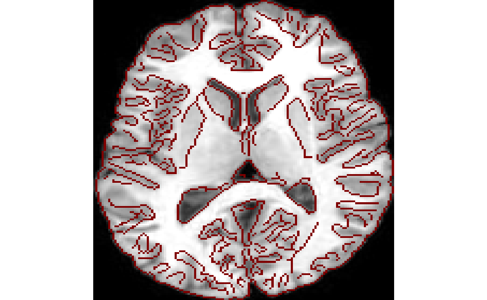
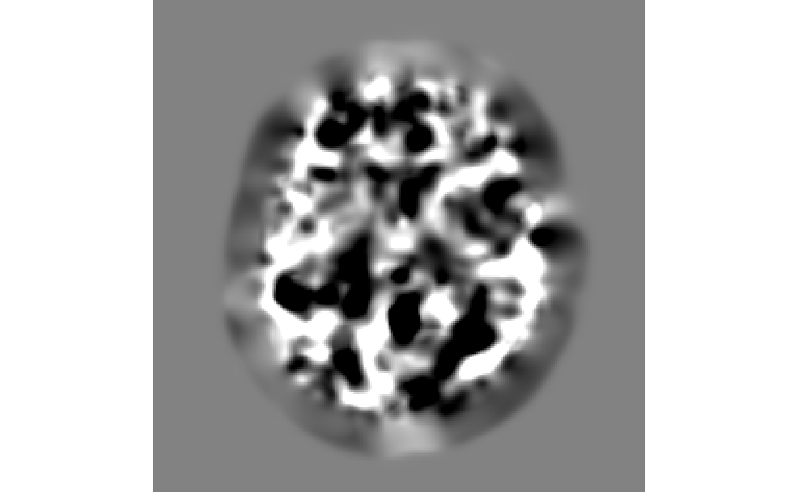

Transformations and statistical representations for images in R
Brian B. Avants
2019-05-06
ANTsR.Rmd“A small leak will sink a great ship.” (folk wisdom)
Introduction
The ANTsR package interfaces state of the art image processing with R statistical methods. The project grew out of the need, at University of Pennsylvania, to develop large-scale analytics pipelines that track provenance from scanner to scientific study. ANTsR achieves this by wrapping an ANTs and ITK C++ core via Rcpp (Eddelbuettel 2013).
ITK is a templated C++ framework with I/O and support for arbitrary image types (usually 2, 3 or 4 dimensions) as well as surface representations. ANTs, built on ITK, focuses on multivariate image matching and segmentation as well as geometric (even high-dimensional) image transformation. Both tools are deeply validated and widely used.
Together, these tools allow powerful image manipulations. However, they lack a true statistical back-end. Historically, statistical software was not amenable to direct manipulation of multiple dimensional images. This led to “in-house” statistical programming or, perhaps worse (for science), reliance on closed source commercial software. Given the increasing popularity of R and prominence of quantitative imaging, it is natural that R should have a package focused on biological or medical image analysis.
This package integrates several frameworks for extracting quantitative information from images and mapping images into reference coordinate systems. Human brain mapping studies have long relied on Talairach-Tournoux and related coordinate systems (TALAIRACH and TOURNOUX 1958). Similar standardized localization is becoming more common within non-human studies (Johnson et al. 2010; Majka et al. 2013). Atlases of other organ systems are also emerging and being applied clinically (de Marvao et al. 2014). This class of methods relies on image transformation and image segmentation as an aid to the ultimate goal of quantifying variability within and across populations. Longer term, such methods will be critical to individualized patient care and other translational applications.
ANTsR Algorithms
Here, we provide an overview of the methods available within ANTsR.
core image processing and I/O: ITK (B. B. Avants, Tustison, et al. 2014);
registration and utilities for image processing: ANTs mappings (Tustison, Cook, et al. 2014) and feature extraction (Tustison, Shrinidhi, et al. 2014);
dimensionality reduction: Eigenanatomy (Dhillon et al. 2014) and SCCAN (B. B. Avants, Libon, et al. 2014);
methods for ASL-based cerebral blood flow quantification (Kandel et al. 2015);
neighborhood representations of images that enable rich statistical models (Kandel et al. 2015)
core statistics and temporal filtering via R packages that is amenable to BOLD image processing
In combination, these tools enable one to go from near-raw medical imaging data to a fully reproducible scientific publication (Avants 2015).
Data organization and access in ANTsR
This package uses an antsImage S4 class to hold pointers to ITK images. We convert antsImage objects to R objects before passing them to R statistical methods. E.g. we convert a scalar image to a vector, a collection of scalar images to a matrix or a time series image to a matrix. Currently, ANTsR does not explicitly represent images with vector valued voxels (e.g. tensor or warp images) although these may be supported in the future in a way that is similar to our current support for time series images. The large majority of images employed within ANTsR are of 2, 3 or 4 dimensions with float pixel types. This information is stored within the antsImage class.
A few example images are built into ANTsR, but more can be downloaded. See ?getANTsRData.
## antsImage
## Pixel Type : float
## Components Per Pixel: 1
## Dimensions : 256x256
## Voxel Spacing : 1x1
## Origin : 0 0
## Direction : 1 0 0 1
## Filename : /Library/Frameworks/R.framework/Versions/3.6/Resources/library/ANTsRCore/extdata/r16slice.jpgTake a quick look at the image.
Contributions of the package
ANTsR includes:
An organizational system such that relatively small scripts may implement full studies
- Implementation of foundational methods
- Smoothing, temporal filtering, etc
- functional image denoising via
compcorand*DenoiseR - flexible: easy to estimate voxel-wise statistical models
Reference simulation data and examples distributed with the package
- Interpretation of results
- sparse low-dimensional predictors
- anatomical labeling of predictors based on AAL and other coordinate systems
Openness and reproducibility
In total, ANTsR is a rigorous framework upon which one may build customized statistical implementations appropriate for large-scale functional, structural or combined functional and structural image analyses. Because much of the core is implemented with C++, the framework also remains efficient. Finally, note that Rscript allows one to send ANTsR scripts to clusters and take advantage of distributed computing resources.
Basic ANTsR functionality
Here, we quickly summarize ANTsR functionality and useful tools.
The travis build system
We test ANTsR regularly. The status of the build (and an expected build result) can be seen here:  . Take a look at the detailed log to see what one might expect if building ANTsR from source.
. Take a look at the detailed log to see what one might expect if building ANTsR from source.
Image input and output
If nothing else, ANTsR makes it easy to read and write (medical) images and to map them into a format compatible with R. Formats we frequently use include jpg, tiff, mha, nii.gz and nrrd. However, only the last three have a proper physical space representation necessary for mapping. Below is an example of how we access this type of image and see its geometry. Check antsImageWrite for the primary supported I/O.
## antsImage
## Pixel Type : unsigned char
## Components Per Pixel: 1
## Dimensions : 256x256
## Voxel Spacing : 1x1
## Origin : 0 0
## Direction : 1 0 0 1
## Filename : /Library/Frameworks/R.framework/Versions/3.6/Resources/library/ANTsRCore/extdata/r27slice.jpg## [1] 1 1## [,1] [,2]
## [1,] 1 0
## [2,] 0 1## [1] 0 0## [,1]
## [1,] 182## [1] 255Index an image with a label
Often, you would like to summarize or extract information from within a known region of an image with arbitrary shape but within a given intensity “zone”. We simulate this below and show a few accessors and type conversions.
gaussimg<-array( data=rnorm(125), dim=c(5,5,5) )
arrayimg<-array( data=(1:125), dim=c(5,5,5) )
img<-as.antsImage( arrayimg )
print( max(img) )## [1] 125## [1] 88## [1] 99# if using SUBSET using an antsImage, you must be explicit
sub = as.array(img >= 50 & img <= 99) > 0
print( mean( gaussimg[ sub ]) )## [1] -0.2068316Convert a 4D image to a matrix
Four dimensional images are generated and used in the same way. One can easily transform from 4D image to matrix and back.
## [1] 5 5 5 10avg3d<-ANTsR::getAverageOfTimeSeries( gaussimg )
mask <- avg3d < 0.25
gmat<-timeseries2matrix( gaussimg, mask )
print(dim(gmat))## [1] 10 95If one has a mask, then one can use makeImage to generate a new image from a scalar or vector.
newimg<-makeImage( mask, mean(avg3d) ) # from scalar
newimg<-makeImage( mask, colMeans(gmat) ) # from vectorConvert a list of images to a matrix
Often, one has several scalar images that need to be accumulated for statistical processing. Here, we generate a simulated set of these images and then proceed to smooth them, store them in a list and convert them to a matrix after extracting the information of each image within a data-driven mask.
nimages<-100
ilist<-list()
for ( i in 1:nimages )
{
simimg<-makeImage( c(50,50) , rnorm(2500) )
simimg<-smoothImage(simimg,1.5)
ilist[[ i ]] = simimg
}
# get a mask from the first image
mask<-getMask( ilist[[1]],
lowThresh=mean(ilist[[1]]), cleanup=TRUE )
mat<-imageListToMatrix( ilist, mask )
print(dim(mat))## [1] 100 231Once we have a matrix representation of our population, we might run a quick voxel-wise regression within the mask. Then we look at some summary statistics.
mat<-imageListToMatrix( ilist, mask )
age<-rnorm( nrow(mat) ) # simulated age
gender<-rep( c("F","M"), nrow(mat)/2 ) # simulated gender
# this creates "real" but noisy effects to detect
mat<-mat*(age^2+rnorm(nrow(mat)))
mdl<-lm( mat ~ age + gender )
mdli<-bigLMStats( mdl, 1.e-4 )
print(names(mdli))## [1] "fstat" "pval.model" "beta" "beta.std" "beta.t"
## [6] "beta.pval"## [1] "age" "genderM"## [1] "age 0.00254183222665977"## [1] "gen 0.27839912216445"Write out a statistical map
We might also write out the images so that we can save them for later or look at them with other software.
More ANTsR functionality
We achieve quantification in biological or medical imaging by using prior knowledge about the image content.
Segmentation
In segmentation, we assume the image has a known set of tissues, organs etc. Here, we assume 3 tissues exist and use a classic k-means model with MRF penalty (Avants et al. 2011). Note that we also bias correct the image to help it match our model (Tustison et al. 2010).
fi<-antsImageRead( getANTsRData("r16") ,2)
fi<-n3BiasFieldCorrection(fi,2)
seg<-kmeansSegmentation( fi, 3 )
invisible(plot(seg$segmentation))
If you like segmentation, also look at rfSegmentation and atropos.
Registration
In registration, we assume the image can be mapped to some canonical shape or example, i.e. an atlas. Or to another individual. ANTsR provides a simple wrapper for SyN image registration (Tustison and Avants 2013),
mi<-antsImageRead( getANTsRData("r64") ,2)
mytx<-antsRegistration(fixed=fi , moving=mi ,
typeofTransform = c('SyN'))
regresult<-iMath(mytx$warpedmovout,"Normalize")
fiedge<-iMath(fi,"Canny",1,5,12)
invisible(plot(regresult, list(fiedge), window.overlay=c(0.5,1)) )
while invariantImageSimilarity provides powerful multi-start search for lower dimensional affine registrations.
Deformable image registration results in a voxel-wise map of the contraction and expansion of the moving image (after affine transformation) that is needed to map to the fixed image. This deformation gradient is colloquially known as “the jacobian”.

Above, we compute and plot the image of the log-jacobian. This mapping is a useful summary measurement for morphometry (Avants et al. 2012,@Kim2008).
Registration and segmentation
Registration and segmentation are often applied jointly or iteratively to maximize some criterion. See the example in jointIntensityFusion for one such case (Wang and Yushkevich 2013).
Neighborhood operations
Basic I/O and management of images as vectors is critical. However, there is additional information that can be gained by representing an image and its neighborhood information. ANTsR represents image neighborhoods, which capture shape and texture, as a matrix. Here, extract an image neighborhood matrix representation such that we may analyze it at a given scale.
mnit<-getANTsRData("r16")
mnit<-antsImageRead( mnit )
mnit <- resampleImage( mnit , rep(4, mnit@dimension) ) # downsample
mask2<-getMask(mnit,lowThresh=mean(mnit),cleanup=TRUE)
radius <- rep(2,mnit@dimension)
mat2<-getNeighborhoodInMask(mnit, mask2, radius,
physical.coordinates = FALSE,
boundary.condition = "mean" )
print(dim(mat2))## [1] 25 1113The variable mat2 has size determined by the neighborhood radius (here, 5) and the number of non-zero voxels in the mask. The boundary.condition says how to treat data that is outside of the mask or the image boundaries. This example replaces missing data with the mean in-mask value of the local neighborhood.
Other useful tools in ANTsR include iMath, thresholdImage, quantifyCBF, preprocessfMRI, aslPerfusion, computeDVARS, getROIValues, hemodynamicRF, makeGraph, matrixToImages, rfSegmentation, antsRegistration, plotPrettyGraph, plotBasicNetwork, getTemplateCoordinates, antsSet*.
Several image mathematics operations (like ImageMath in ANTs) are accessible too via iMath.
Example label sets and data
ANTsR also provides AAL label (Tzourio-Mazoyer et al. 2002) names via:
with cortical labs defined by labs. The DKT atlas labels are similarly summarized in DesikanKillianyTourville (Klein and Tourville 2012).
An example BOLD correlation matrix is available in bold_correlation_matrix. This can be used to try out makeGraph and related functions.
Visualization and plotting
The basic plot function is implemented for the antsImage class. It can show 2 or 3D data with color overlays, the latter of which can display multiple slices side by side. Several color choices are available for the overlays.
For 3D images, see renderSurfaceFunction and plotBasicNetwork for rgl and misc3d based interactive surface and network plots. Another such example is in visualizeBlob. These are too long-running to compile into the vignette but the help examples for these functions will allow you to see their results.
A good visualization alternative outside of ANTsR is antsSurf.
BOLD data processing with ANTsR
Good approaches exist in ANTsR for preprocessing BOLD data. These yield both motion matrices and relevant summary measurements such as FD and DVARS. See ?preprocessfMRI for a simplified utility function. This function could be used on each run of an experiment and the results stored in organized fashion for later use.
Motion correction
To motion correct your data, one might run:
# get an average image
averageImage <- getAverageOfTimeSeries( boldImage )
motionCorrectionResults <- antsMotionCalculation( boldImage,
fixed = averageImage )A moreaccurate flag should be set to 1 or 2 for usable (not test) results. FD and DVARS are returned which may be used to summarize motion. One might also get this data from preprocessfMRI which also provides denoising options based on data-driven methods including frequency filtering.
For more fMRI focused tools, see RKRNS and its github site github RKRNS.
Dimensionality reduction
Images often have many voxels (\(p\)-voxels) and, in medical applications, this means that \(p>n\) or even \(p>>n\), where \(n\) is the number of subjects. Therefore, we often want to “intelligently” reduce the dimensionality of the data. We favor methods related to PCA and CCA but have a few ICA related tools too.
Eigenanatomy & SCCAN
Our sparse and geometrically constrained dimensionality reduction methods seek to both explain variance and also yield interpretable, spatially localized pseudo-eigenvectors (Kandel et al. 2014,@Cook2014). This is the point of “eigenanatomy” which is a variation of sparse PCA that uses (optionally) biologically-motivated smoothness, locality or sparsity constraints.
# assume you ran the population example above
eanat<-sparseDecom( mat, mask, 0.2, 5, cthresh=2, its=2 )
eanatimages = matrixToImages( eanat$eig, mask )
eseg<-eigSeg(mask, eanatimages ,F)
jeanat<-joinEigenanatomy(mat, mask, eanatimages, c(0.1))
eseg2<-eigSeg(mask,jeanat$fusedlist,F)The parameters for the example above are set for fast processing. You can see our paper for some theory on these methods (Kandel et al. 2014). A more realistic study setup would be
eanat<-sparseDecom( inmatrix=mat, inmask=famask, nvecs=50,
sparseness=0.005, cthresh=500, its=5, mycoption=0 )
jeanat<-joinEigenanatomy( mat , famask, eanat$eig,
c(1:20)/100.0 , joinMethod='multilevel' )
useeig<-eanat$eig
useeig<-jeanat$fusedlist
avgmat<-abs(imageListToMatrix( useeig , famask ))
avgmat<-avgmat/rowSums(abs(avgmat))
imgmat<-( mat %*% t(avgmat) )The imgmat variable would be your summary predictors entered into lm or randomForest.
More information is available within the examples that can be seen within the help for sparseDecom, sparseDecom2 and the helper function initializeEigenanatomy.
Sparse canonical correlation analysis
CCA maximizes \(PearsonCorrelation( XW^T, ZY^T )\) where \(X, W\) are as above and \(Z\) and \(Y\) are similarly defined. CCA optimizes the matrices \(W, Y\) operating on \(X, Z\) to find a low-dimensional representation of the data pair \(( X , Z )\) in which correlation is maximal. Following ideas outlined in Dhillon et al. (2014) and B. B. Avants, Libon, et al. (2014), this method can be extended with sparsity constraints that yield rows of \(W, Y\) with a controllable number of non-zero entries. See the sccan tutorial and sparseDecom2 for more information.
Conclusions
With the current ANTsR, one may:
Exploit ANTs and ITK functionality within R
Leverage R functionality to help understand and interpret imaging data
Use feature selection based on various filtering strategies in
iMathand elsewhere (e.gsegmentShapeFromImage)Employ dimensionality reduction through eigenanatomy or SCCAN with a variety of incarnations, some of which are similar to ICA
Use relatively few interpretable and low-dimensional predictors derived from high-dimensional data.
Interpret multivariate results intuitively when used in combination with standard R visualization.
See ANTsR for all source code and documentation and RKRNS-talk for html slides that discuss extensions to BOLD decoding.
Enjoy and please refer issues to ANTsR issues.
References
Avants, Brian B. et al. 2015. “The Pediatric Template of Brain Perfusion.” Sci. Data.
Avants, Brian B., David J. Libon, Katya Rascovsky, Ashley Boller, Corey T. McMillan, Lauren Massimo, H Branch Coslett, Anjan Chatterjee, Rachel G. Gross, and Murray Grossman. 2014. “Sparse Canonical Correlation Analysis Relates Network-Level Atrophy to Multivariate Cognitive Measures in a Neurodegenerative Population.” Neuroimage 84 (January). Department of Radiology, University of Pennsylvania School of Medicine, Philadelphia, PA, USA.: 698–711. https://doi.org/10.1016/j.neuroimage.2013.09.048.
Avants, Brian B., Nicholas J. Tustison, Michael Stauffer, Gang Song, Baohua Wu, and James C. Gee. 2014. “The Insight Toolkit Image Registration Framework.” Front Neuroinform 8. Penn Image Computing; Science Laboratory, Department of Radiology, University of Pennsylvania Philadelphia, PA, USA.: 44. https://doi.org/10.3389/fninf.2014.00044.
Avants, Brian B., Nicholas J. Tustison, Jue Wu, Philip A. Cook, and James C. Gee. 2011. “An Open Source Multivariate Framework for N-Tissue Segmentation with Evaluation on Public Data.” Neuroinformatics 9 (4). Penn Image Computing; Science Laboratory, University of Pennsylvania, 3600 Market Street, Suite 370, Philadelphia, PA 19104, USA. stnava@gmail.com: 381–400. https://doi.org/10.1007/s12021-011-9109-y.
Avants, Brian, Paramveer Dhillon, Benjamin M. Kandel, Philip A. Cook, Corey T. McMillan, Murray Grossman, and James C. Gee. 2012. “Eigenanatomy Improves Detection Power for Longitudinal Cortical Change.” Med Image Comput Comput Assist Interv 15 (Pt 3). Department of Radiology, University of Pennsylvania, Philadelphia, PA 19104, USA.: 206–13.
Cook, Philip A., Corey T. McMillan, Brian B. Avants, Jonathan E. Peelle, James C. Gee, and Murray Grossman. 2014. “Relating Brain Anatomy and Cognitive Ability Using a Multivariate Multimodal Framework.” Neuroimage, May. Penn Frontotemporal Degeneration Center, Department of Neurology, Perelman School of Medicine, University of Pennsylvania, Philadelphia, PA 19104, USA. https://doi.org/10.1016/j.neuroimage.2014.05.008.
de Marvao, Antonio, Timothy J W. Dawes, Wenzhe Shi, Christopher Minas, Niall G. Keenan, Tamara Diamond, Giuliana Durighel, et al. 2014. “Population-Based Studies of Myocardial Hypertrophy: High Resolution Cardiovascular Magnetic Resonance Atlases Improve Statistical Power.” J Cardiovasc Magn Reson 16. th Hospital Campus, Du Cane Road, London W12 0NN, UK. antonio.de-marvao10@imperial.ac.uk.: 16. https://doi.org/10.1186/1532-429X-16-16.
Dhillon, Paramveer S., David A. Wolk, Sandhitsu R. Das, Lyle H. Ungar, James C. Gee, and Brian B. Avants. 2014. “Subject-Specific Functional Parcellation via Prior Based Eigenanatomy.” Neuroimage, May. Penn Image Computing; Science Laboratory (PICSL), Department of Radiology, University of Pennsylvania, Philadelphia, PA, USA. https://doi.org/10.1016/j.neuroimage.2014.05.026.
Eddelbuettel, Dirk. 2013. Seamless R and C++ Integration with Rcpp. New York: Springer.
Johnson, G Allan, Alexandra Badea, Jeffrey Brandenburg, Gary Cofer, Boma Fubara, Song Liu, and Jonathan Nissanov. 2010. “Waxholm Space: An Image-Based Reference for Coordinating Mouse Brain Research.” Neuroimage 53 (2). Duke Center for In Vivo Microscopy, Radiology, Duke University Medical Center, Durham, NC 27710, USA. gjohnson@duke.edu: 365–72. https://doi.org/10.1016/j.neuroimage.2010.06.067.
Kandel, Benjamin M., Danny J J. Wang, John A. Detre, James C. Gee, and Brian B. Avants. 2015. “Decomposing Cerebral Blood Flow Mri into Functional and Structural Components: A Non-Local Approach Based on Prediction.” Neuroimage 105 (January). Penn Image Computing; Science Laboratory, University of Pennsylvania, Philadelphia, PA, USA; Department of Radiology, Hospital of the University of Pennsylvania, Philadelphia, PA, USA.: 156–70. https://doi.org/10.1016/j.neuroimage.2014.10.052.
Kandel, Benjamin M., Danny J J. Wang, James C. Gee, and Brian B. Avants. 2014. “Eigenanatomy: Sparse Dimensionality Reduction for Multi-Modal Medical Image Analysis.” Methods, October. Penn Image Computing; Science Laboratory, University of Pennsylvania, Philadelphia, PA, United States; Department of Radiology, Hospital of the University of Pennsylvania, Philadelphia, PA, United States. https://doi.org/10.1016/j.ymeth.2014.10.016.
Kim, Junghoon, Brian Avants, Sunil Patel, John Whyte, Branch H. Coslett, John Pluta, John A. Detre, and James C. Gee. 2008. “Structural Consequences of Diffuse Traumatic Brain Injury: A Large Deformation Tensor-Based Morphometry Study.” Neuroimage 39 (3). Moss Rehabilitation Research Institute, Albert Einstein Healthcare Network, Philadelphia, PA 19141, USA. kimj@einstein.edu: 1014–26. https://doi.org/10.1016/j.neuroimage.2007.10.005.
Klein, Arno, and Jason Tourville. 2012. “101 Labeled Brain Images and a Consistent Human Cortical Labeling Protocol.” Front Neurosci 6. of Medicine Stony Brook, NY, USA ; Department of Psychiatry, Columbia University New York, NY, USA.: 171. https://doi.org/10.3389/fnins.2012.00171.
Majka, Piotr, Jakub M. Kowalski, Natalia Chlodzinska, and Daniel K. Wójcik. 2013. “3D Brain Atlas Reconstructor Service–Online Repository of Three-Dimensional Models of Brain Structures.” Neuroinformatics 11 (4). Nencki Institute of Experimental Biology, 3 Pasteur Street, 02-093, Warsaw, Poland, p.majka@nencki.gov.pl.: 507–18. https://doi.org/10.1007/s12021-013-9199-9.
TALAIRACH, J., and P. TOURNOUX. 1958. “[Stereotaxic Localization of Central Gray Nuclei].” Neurochirurgia (Stuttg) 1 (1): 88–93. https://doi.org/10.1055/s-0028-1095515.
Tustison, Nicholas J., and Brian B. Avants. 2013. “Explicit B-Spline Regularization in Diffeomorphic Image Registration.” Front Neuroinform 7. Penn Image Computing; Science Laboratory, Department of Radiology, University of Pennsylvania Philadelphia, PA, USA.: 39. https://doi.org/10.3389/fninf.2013.00039.
Tustison, Nicholas J., Brian B. Avants, Philip A. Cook, Yuanjie Zheng, Alexander Egan, Paul A. Yushkevich, and James C. Gee. 2010. “N4ITK: Improved N3 Bias Correction.” IEEE Trans Med Imaging 29 (6). Department of Radiology, University of Pennsylvania, Philadelphia, PA 19140, USA. ntustison@wustl.edu: 1310–20. https://doi.org/10.1109/TMI.2010.2046908.
Tustison, Nicholas J., Philip A. Cook, Arno Klein, Gang Song, Sandhitsu R. Das, Jeffrey T. Duda, Benjamin M. Kandel, et al. 2014. “Large-Scale Evaluation of Ants and Freesurfer Cortical Thickness Measurements.” Neuroimage 99 (October). Penn Image Computing; Science Laboratory, University of Pennsylvania, Philadelphia, PA, USA.: 166–79. https://doi.org/10.1016/j.neuroimage.2014.05.044.
Tustison, Nicholas J., K. L. Shrinidhi, Max Wintermark, Christopher R. Durst, Benjamin M. Kandel, James C. Gee, Murray C. Grossman, and Brian B. Avants. 2014. “Optimal Symmetric Multimodal Templates and Concatenated Random Forests for Supervised Brain Tumor Segmentation (Simplified) with Antsr.” Neuroinformatics, November. Department of Radiology; Medical Imaging, University of Virginia, Charlottesville, VA, USA, ntustison@virginia.edu. https://doi.org/10.1007/s12021-014-9245-2.
Tzourio-Mazoyer, N., B. Landeau, D. Papathanassiou, F. Crivello, O. Etard, N. Delcroix, B. Mazoyer, and M. Joliot. 2002. “Automated Anatomical Labeling of Activations in Spm Using a Macroscopic Anatomical Parcellation of the Mni Mri Single-Subject Brain.” Neuroimage 15 (1). Groupe d’Imagerie Neurofonctionnelle, UMR 6095 CNRS CEA, Université de Caen, Université de Paris 5, France.: 273–89. https://doi.org/10.1006/nimg.2001.0978.
Wang, Hongzhi, and Paul A. Yushkevich. 2013. “Multi-Atlas Segmentation with Joint Label Fusion and Corrective Learning-an Open Source Implementation.” Front Neuroinform 7. Department of Radiology, PICSL, Perelman School of Medicine at the University of Pennsylvania Philadelphia, PA, USA.: 27. https://doi.org/10.3389/fninf.2013.00027.